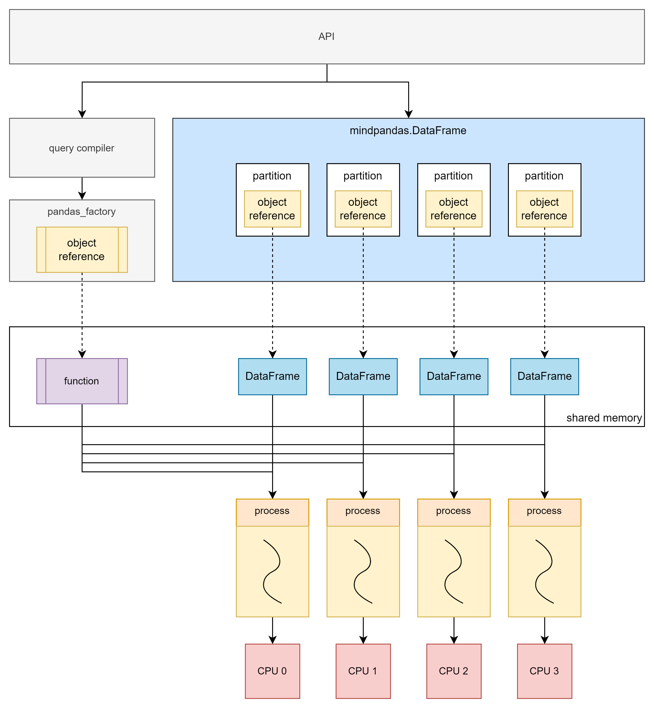

MindSpore Pandas Execution Mode Introduction and Configuration Instructions

This article mainly introduces the principle and usage of MindSpore Pandas distributed parallel mode.
MindSpore Pandas Implementation Principle
MindSpore Pandas accelerates Pandas data processing through parallelized computing. The principle is to first slice the original data into a bunch of partitions, then convert the API into a general computing paradigm (map, reduce, injective_map, etc.), and then parallelize the calculation by the backend. The current MindSpore Pandas backend has two execution modes, which are multi-threaded mode and multi-process mode.
Data Slicing Principle
Slicing raw data is the basis of parallel computing. The following figure shows the process of converting pandas.DataFrame to mindpandas.DataFrame. According to the preset partition_shape, the original data is divided into a specified number of partition and partition will be used as the basic unit of subsequent parallel computing .

The Principle of Multi-thread Mode
Multi-thread mode is implemented based on Python multi-thread. Each data partition and its corresponding computation function are executed in one thread.
Although Python’s multi-thread has a global interpreter lock (GIL) limitation, multi-thread cannot effectively utilize multi-core. However, when the amount of data is small or when dealing with IO-intensive tasks, the multi-threaded backend can still bring significant performance gains.
Principle of Multi-process Mode
The multi-process mode is not limited by Python’s global interpreter lock (GIL) and can achieve real parallel computing. The principle of multi-process mode is similar to that of multi-thread mode. The difference is that after slicing the original data, the partitions are stored in the shared memory of the distributed compute engine, and the mindpandas.DataFrame stores the corresponding object reference of the partitions.
When computing is required, the computing function is also stored in the shared memory of the distributed compute engine, and then the object reference corresponding to the computing function and the object reference corresponding to the partition is submitted to the distributed compute engine as a task. All tasks will be uniformly scheduled by the distributed compute engine and executed asynchronous parallelism and in the form of multi-process.
Single Machine Multi-process Principle

The multi-process mode can make full use of multi-core, thereby achieving performance improvements ranging from several times to dozens of times. Therefore, the multi-process mode can efficiently deal with scenarios with a large amount of data. However, due to overhead such as process creation and scheduling, performance may be affected when the amount of data processed is small.
Multi-machine Multi-process Principle
In the multi-machine multi-process mode, computing is performed on a cluster composed of multiple servers, which can make full use of the resources of multiple machines to complete computing tasks and break through the resource limitations of single machine.
MindSpore Pandas Execution Mode Configuration
Data Partition Configuration
MindSpore Pandas supports users to configure the shape of the partition according to the actual usage. Users can use set_partition_shape to customize the number of rows and columns of the partition.
import mindpandas as pd
pd.set_partition_shape((16, 2))
df = pd.read_csv('data.csv')
df_mean = df.mean()
Multi-threaded Mode Configuration
MindSpore Pandas uses the multi-threaded mode as follows:
import mindpandas as pd
pd.set_concurrency_mode('multithread') # MindSpore Pandas will use multithread as backend
df = pd.read_csv('data.csv')
df_mean = df.mean()
Multi-process Mode Configuration
When MindSpore Pandas is installed, the built-in distributed compute engine has also been installed synchronously, which can be accessed using the command yrctl in the console.
Note: In multi-process mode, please make sure that the cluster you start is only for your personal use. Using a cluster together with others may lead to potential security risks.
$ yrctl
Usage: yrctl [OPTIONS] COMMAND [ARGS]...
The distributed executor of MindSpore Pandas.
Options:
--help Show this message and exit.
Commands:
start used to start the fleeting cluster
stop used to stop the fleeting cluster
Single-machine Multi-process Mode Configuration
To use the distributed compute engine, we need to start the service through the command line to deploy a single-machine cluster. An example command to deploy a cluster is as follows:
yrctl start --master --address <address> --cpu <cpu> --datamem <datamem> --mem <mem> --tmp-dir <tmp-dir> --tmp-file-size-limit <tmp-file-size-limit>
Common parameters of the yrctl start command are:
--master: Flag bit, set the current node as the master node. There is only one master node in the cluster. This flag must be set when deploying a single-machine cluster.--address: The ip address of the master node. Optional, uses “127.0.0.1” by default.--cpu: The number of CPU cores to use. Optional, uses all CPU cores by default.--datamem: The amount of memory used by datasystem (MB). Optional, uses 30% of total memory by default.--mem: The total memory (including datamem) used by MindSpore Pandas (MB). Optional, uses 90% of total memory by default.--tmp-dir: The temporary directory for the mindpandas process. Optional, uses “/tmp/mindpandas” by default.--tmp-file-size-limit: The temporary file size limit (MB). Optional, the default value is “None” which uses up to 95% of current free disk space.
To view the parameter usage instructions of yrctl start, you can view it through yrctl start --help.
Before starting the cluster, check the following:
No other redis service on this machine occupies port 6379, otherwise it will cause port conflict. If there is a conflict between redis or other ports, please refer to FAQ to solve it.
If the cluster deployment is successful, the end of the console echo should show:
Succeeded to start!
After the cluster is deployed, you need to set a multi-process backend to run in the Python script. The method is to call the set_concurrency_mode interface, set the mode to "multiprocess".
Note: We recommend calling
set_concurrency_modeimmediately afterimport mindpandasto set the concurrency mode. Switching the parallel mode while the script is running may cause the program failure.
import mindpandas as pd
pd.set_concurrency_mode(mode="multiprocess")
To stop the distributed compute engine, use the yrctl stop command:
$ yrctl stop --help
Usage: yrctl stop [OPTIONS]
used to stop the fleeting cluster
Options:
--help Show this message and exit.
After successfully stopping the distributed compute engine, the end of the echo should show:
Succeeded to stop!
Multi-machine Multi-process Mode Use
MindSpore Pandas’ multi-process backend supports building clusters on multiple machines and performs distributed computing. The cluster consists of a master node and multiple worker nodes, and services need to be started separately on each machine in the cluster. The startup method is the same as the single-machine multi-process mode, but the master node must be started first, and then other worker nodes must be started.
Start the master node:
yrctl start --master --address <address>
where address is the IP address of the master node.
Start the worker node:
yrctl start --address=<address>
The address is the IP address of the master node. If the deployment fails during startup, please refer to FAQ.
After the cluster is deployed, in the Python script, use the "multiprocess" backend as shown in the following code.
import mindpandas as pd
pd.set_concurrency_mode("multiprocess")
The command to stop the cluster is as follows, which needs to be executed on the master node and each worker node separately:
yrctl stop
Adaptive Concurrency Function
Because the performance of single-process computing is good enough when the amount of data is small. The parallel benefits of multi-process computing are often smaller than the extra overhead of using multi-processes, so MindSpore Pandas has added an adaptive concurrency function. When this function is enabled, MindSpore Pandas will adaptively switch the concurrency mode according to the data size to improve performance.
Enabling Adaptive Concurrency
The adaptive concurrency feature is set to off by default, and it can be turned on through the set_adaptive_concurrency interface in a Python script:
import mindpandas as pd
pd.set_adaptive_concurrency(True)
Triggering Conditions
After the adaptive concurrency function is enabled, the conditions for automatically switching the parallel mode are as follows:
Multi-threaded mode is used when reading csv files smaller than 18MB, and multi-process mode is used in other cases.
mindpandas.DataFrameinitialized bypandas.DataFrame. The one whose memory usage is less than 1GB will use multi-thread mode, and other cases use multi-process mode.mindpandas.DataFrameinitialized bynumpy.ndarray. The one whose memory usage is less than 1GB will use multi-thread mode, and other cases use multi-process mode.
Precautions
After the adaptive concurrency function is activated, the parallel mode and partition shape are adjusted by MindSpore Pandas, and users cannot use
set_concurrency_modeto modify the concurrency mode.set_adaptive_concurrency(True)should be called at the beginning of the Python script.After setting
set_adaptive_concurrency(True), users are not advised to switch adaptive concurrency back toFalseunless the Python script has finished running.
Usage Restrictions
The adaptive concurrency feature currently does not support DataFrames created from operations such as
merge,concatorjoin.The concurrency mode of the initialized or read DataFrame/Series before the adaptive concurrency function is enabled cannot be changed.
The adaptive concurrency feature currently uses a specific partition shape, i.e. (2, 2) partition shape for multi-thread mode and (16, 16) partition shape for multiprocessing mode.
Other I/O operations other than
read_csv, such asread_feather, currently do not support adaptive concurrency.